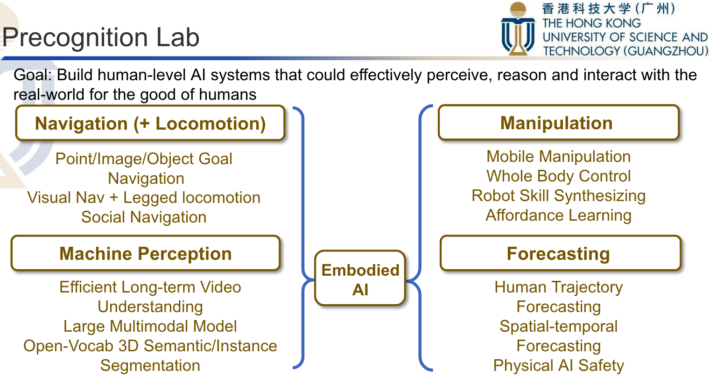

Research Roadmap of the Precognition Lab (01/2024)
- Machine Perception
- Efficient long-term video understanding [CMU-DIVA]
- Large Multimodal Model [NeurIPS'22, NeurIPS'22]
- Learning from 3D simulation [ForkingPaths], [SimAug], [CARLA Sim]
- Forecasting
- Action Anticipation & Human Intention Prediction [Next-prediction]
- Trajectory Prediction [Multiverse]
- Spatial-temporal Forecasting
- Navigation
- Point/Image/Object Goal Navigation
- Social Navigation
- Manipulation
- Mobile Manipulation
- Whole Body Control